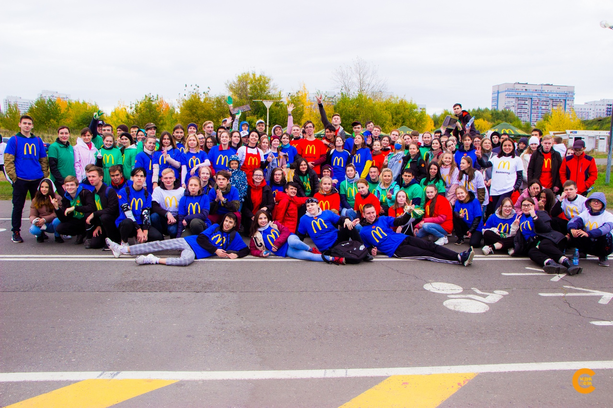
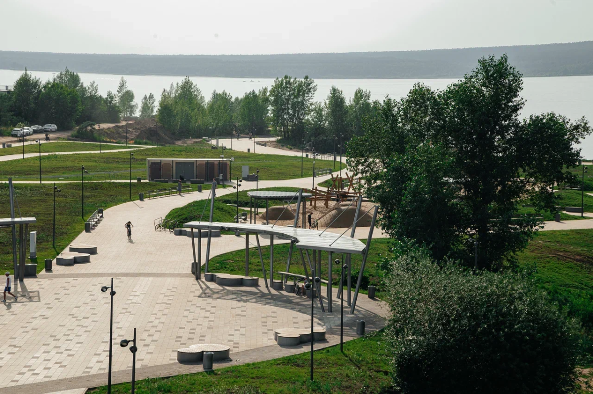

Городские акции
Участвуйте в уборке, озеленении и создании новых общественных пространств.
Команда волонтёров
Присоединяйтесь к тем, кто превращает идеи жителей в реальные изменения и делает город комфортнее каждый день.

Участвуйте в уборке, озеленении и создании новых общественных пространств.

Помогайте пожилым людям с повседневными делами, покупками и заботой о комфортной жизни.

Предлагайте инициативы и помогайте команде превращать их в понятный план действий.
Оставьте контакты, чтобы мы рассказали о ближайших встречах и задачах.
Связаться с нами